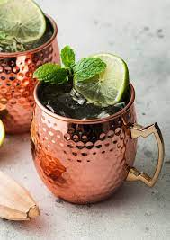

The most refreshing drink in a copper cup, a moscow mule is about as simple as it gets, and yet manages to be extremely polarizing because...well, ginger beer+lime juice+mint. Somehow, it works.
To make a moscow mule, you'll need the following ingredients and the IQ of a literal mule:
- 2+ ounces of vodka (everyone uses Tito's but you do you)
- 1/2 ounce lime juice, make it fresh
- 6 ounces of ginger beer
- Garnish: mint leaf
- A real copper mug, if you're a rich snob
The steps are as follows:
- Mix the ingredients together
- Add ice
- Drink, I guess? Do you really need steps for this?
Back to homepage